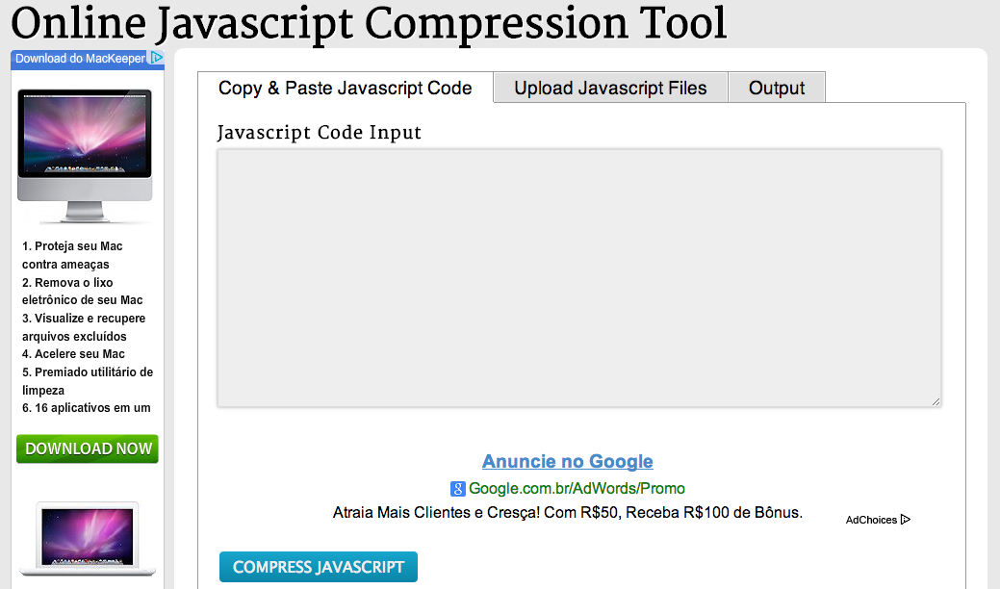
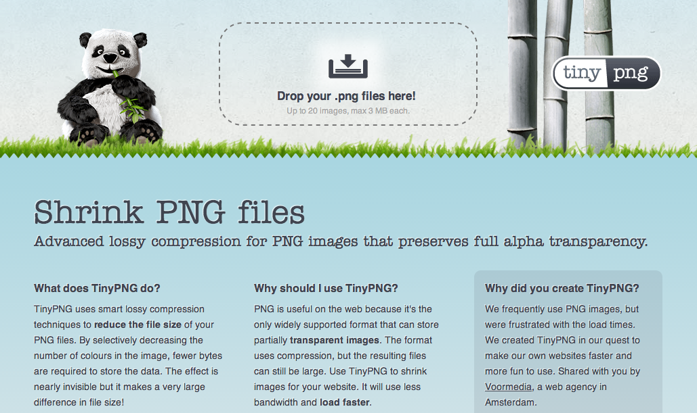
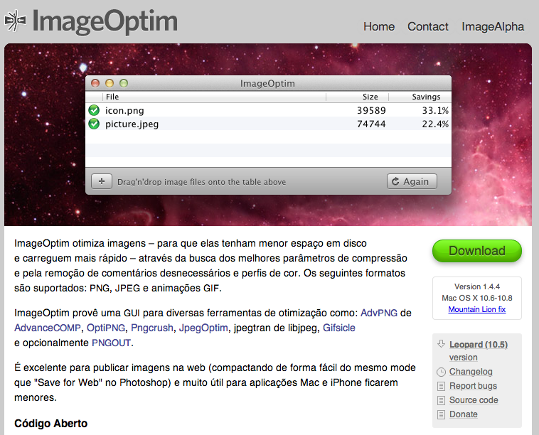
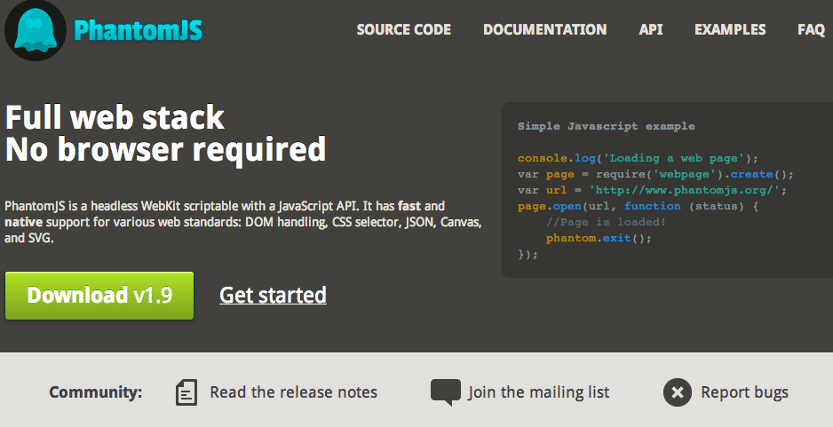

better workflow
Automatizando tarefas
Como ser um desenvolvedor mais feliz?
- Elimine tarefas repetitivas (
don't repeat yourself) - Evite problemas (
copy & paste) - Seja consistente (
don't reinvent the wheel) - Perca seu tempo com o que importa, ou seja programar!
Gerenciando Componentes
Situações comuns no dia a dia
Exemplo 1
Desenvolvedor X vai dar manutenção/continuar o projeto inciado pelo desenvolvedor Y e descobre que os métodos do jQuery não funcionam
Após horas investigando e muitos undefined
no Firebug
o desenvolvedor X vai seguir os seguintes
passos:
- Procurar pela versão no código fonte
- Ir para o site da jQuery e procurar pelas novas versões
- Substiuir a biblioteca na applicação
- Rezar para que tudo funcione sem conflitos
Exemplo 2
O desenvolvedor Z precisa de um novo componente
Quero algo para personalizar os meus select
- Procura no google:
"select plugin jquery" - Seleciona
1entreNresultados - Não sabe se é compativel com sua versão da jQuery
- Perde 1/2 hora para aplicar e descobre que não funciona com
jQuery >= 1.9
Resolvendo os Problemas
Precisamos de um gerênciador de componentes
#!/bin/bash
# OSX
brew install imagemagick
# Python
pip install django
# Ruby
gem install compass
# Node.js
npm install coffee-script
# Web ?
??? install component
BOWER EM 3 PASSOS! (ou menos)
# osx, supondo que você tenha o brew
ruby -e "$(curl -fsSL https://raw.github.com/mxcl/homebrew/go)"
# install node
brew install node
# install bower
npm install bower -g # -g instala global
bower install component
bower search

bower help

bower.json
{
"name": "my-app",
"version": "0.1.0",
"description": "My App Description",
"private": true,
"dependencies": {
"jquery" : "1.9.1",
"selectskin" : "2.0.2",
"bootstrap-select": "1.2.0",
"fancybox": "2.1.5"
}
}
.bowerrc
{
"directory" : "components"
}
bower list

Front-End Tasks
Repetimos muitas tarefas diariamente.
Poucos até tentam "automatizar" de alguma forma.
Minificação de JavaScipt
Começamos com ferramentas online
Depois descobrimos algumas CLI
java -jar yuicompressor-x.y.z.jar file.js file.min.js
Com o passar do tempo você provavelmente vai criar um
app_tasks.sh
para guardar seus de scripts de automatização.
Minificação de CSS
Econtramos mais N ferramentas para fazer o trabalho.
E vamos incrementando nosso app_tasks.sh.
Se tivermos alguns amigos usando Windows nosso app_tasks.sh provavelmente pode ganhar um irmão app_tasks.bat
Otimização de Imagens
Ferramentas Online
Desktop
CLI
jpegtran source.jpg dest.jpg
optipng source.jpg dest.jpg
Mais algumas "tasks" para nosso app_tasks.sh
Mais necessidades vão surgindo
- Verificação de erros (
jshint) - Testes (jasmine, mocha, qunit)
- Servidor HTTP (
python -m SimpleHTTPServer) - etc
- etc...
Auto Refresh
(cmd+s) + (cmd+tab) + (cmd+r) + (cmd+r)...
(2x365)/60 = 12 minutos / ano
(100*12)/60 = 20 horas / ano

LiveReload.app
É bom mas não é perfeito :(
No final das contas você acaba usando
- N ferramentas de CLI
- Ferramentas online
- Aplicações desktop
E seu projeto fica
- Sem organização
- Inconsistente
- Sem padrão
- Difícil de manter
Como melhorar tudo isso?
npm install -g grunt
Quais as vantagens do Grunt?
- Fácil de aprender
- Extensível
- Consistente
- Plugins
- Multiplataforma
package.json
{
"name": "my-app-name",
"version": "1.0.0",
"devDependencies": {
"grunt": "~0.4.1",
"grunt-contrib-compass": "~0.4.1",
"grunt-contrib-watch": "~0.5.1",
"grunt-contrib-jshint": "~0.6.1",
"grunt-contrib-imagemin": "~0.1.4",
"grunt-contrib-clean": "~0.5.0",
"grunt-notify": "~0.2.7",
"grunt-shell": "~0.3.1"
}
}
Instalando as dependências
npm install
setup básico
npm init # cria um package.json
npm install grunt --save-dev
npm install grunt-plugin-name --save-dev
Gruntfile.js
module.exports = function(grunt) {
grunt.initConfig({
// load package info
pkg: grunt.file.readJSON('package.json'),
taskName: {
// task options
}
});
grunt.loadNpmTasks('grunt-plugin-name');
grunt.registerTask('default', ['task1', 'task2', 'task3']);
};
grunt
# roda a task default
grunt
# roda a task especifica
grunt taskName
Centenas de plugins
Se não encontrar um, faça e contribua!
grunt-contrib-jshint
jshint: {
app: ['Gruntfile.js', 'js/app/**/*.js']
admin: ['admin/**/*.js']
},
grunt-contrib-imagemin
imagemin: {
jpg: {
options: {
progressive: false
},
files: [
{
expand: true,
cwd: 'django/static/img',
src: ['**/*.jpg'],
dest: 'django/static/img',
ext: '.jpg'
}
]
}
},
grunt-contrib-watch
watch: {
scss: {
files: [
'compass/source/**/*.scss',
'compass/config.rb',
'django/static/img/sprites/**/*.png'
],
tasks: ['compass'],
options: {
atBegin: true
}
},
livereload: {
files: [
'django/static/css/**/*.css',
'django/app/**/templates/**/*.html',
'django/static/js/app/**/*.js'
],
options: {
livereload: true
}
},
js: {
files: ['<%= jshint.all %>'],
tasks: ['jshint']
}
}
grunt-contrib-qunit
grunt-contrib-jasmine

E muito mais!
- grunt-contrib-uglify
- grunt-contrib-concat
- grunt-contrib-cssmin
- grunt-contrib-connect
- grunt-contrib-compass
- grunt-inline-css
- grunt-favicons
- grunt-ftp-deploy